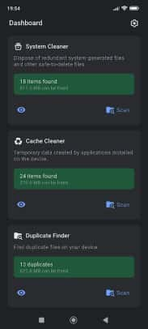

Gator 用了三个月，踩过的那些让人以为要重装的坑
Gator 看着就是个清理工具，其实里面藏着好几个 Android 系统层面的限制，第一次遇到时差点以为软件坏了。这篇把踩过的坑和绕法整理一下，省得你跟我一样走弯路。
Gator官网把它定位成一款专注于 Android 设备的轻量清理工具，我手机上装了快半年，日常用着确实省心——扫一遍垃圾、清一下缓存，存储空间说多就多。但说实话，从官方下载下来安装好，刚跑起来就踩了好几个坑，其中有两次差点把它卸载重装，以为是软件本身出了 bug。后来才发现，几乎所有的"不对劲"都不是 Gator 的问题，而是 Android 系统层面的限制和设计。
这篇就把我踩过的坑按印象深刻程度排一下，每个都讲清楚"你看到的现象 → 为什么会这样 → 怎么绕过去"，看完基本能避开 80% 的折腾。

坑一：Scheduler 到点不清理——不是定时器坏了，是系统杀了它
第一个坑就是自动清理不触发。我装完 Gator 设了每天凌晨三点自动跑 System Cleaner，等了两天看清理历史，一条记录都没有。手动点开跑是正常的，说明 Gator 本身没坏，但定时就是不执行。
一开始我怀疑是不是 Scheduler 配置错了，反复进去检查时间、勾选的清理项，甚至把频率改成"每小时一次"来测，锁屏放一夜起来还是零记录。
症状就是这么个症状，原因其实很无奈：Android 的后台管理策略把 Gator 杀掉了。尤其是 MIUI、ColorOS、OneUI 这些定制系统，后台闲置超过一定时间就会清理进程、收回权限。Scheduler 依赖 Gator 的后台定时器活着，进程一杀，定时器自然就没了。
解法也很直白——把 Gator 加入电池优化白名单。不同品牌系统叫法不一样：原生 Android 叫"不受限制"，小米 MIUI 叫"无限制"，OPPO ColorOS 在"后台运行管理"里，三星 OneUI 还要额外加一层后台使用限制白名单。我用的是小米，除了电池优化白名单，还得去安全中心把"后台弹出界面"打开、关掉"后台冻结"和"异常耗电自动优化"，缺一个都不保险。
白名单加完之后我把 Scheduler 临时改成每分钟执行，锁屏放了十分钟，回来一看清理历史里已经有七八条记录——管用了。之后改回正常频率，到点就清，再也没出过问题。
坑二：缓存清理没生效——无障碍服务被偷偷关掉了
这个坑跟第一个有点像，但表现不同。Scheduler 能正常触发了，清理历史里也有记录，但存储空间数字就是没怎么变。进 System Cleaner 手动清其他类型（残留文件、日志、浏览器历史）都是正常的，唯独应用缓存这块，跑了跟没跑一样。
排查了好一阵才明白：Android 6.0 之后，应用后台不能直接清其他应用的缓存。Google 为了安全加了这个限制，所有标注"自动清理缓存"的 App 底层都得用无障碍服务绕过——模拟用户打开目标应用的系统设置页、点"清除缓存"按钮。Scheduler 自动跑的时候，残留、日志、浏览器历史这三类 Gator 自己能清，唯独应用缓存必须靠无障碍服务。
我开了无障碍服务吗？开了。但问题出在：电池优化和后台限制不仅会杀进程，还会自动关掉无障碍服务。MIUI 上这个问题尤其常见，系统判定 Gator"不活跃"就把它的无障碍权限收回了。
解法分两步：先确认无障碍服务开关还亮着（进系统无障碍设置页，找到 Gator 那一项），然后回到 Scheduler 看最近一次清理的详细日志——如果只有缓存被跳过、其他三类都正常执行，基本就是无障碍关了。开回来就行，但要注意这是个可能复发的问题，每次发现缓存没清第一时间检查这个开关。

坑三：系统应用卸不掉——灰掉的按钮不是 bug
App Manager 里想卸几个手机厂商预装的 App，点进去一看，系统自带那些（Settings、Messages、Phone、Google Play Services）卸载按钮全是灰的，点不动。我第一反应是"Gator 的卸载功能坏了"，甚至提交过一次反馈。后来去Gator文档翻了一下才明白——
其实根本不是故障——Android 把系统自带应用放在只读分区里，没有 root 权限的进程碰都碰不到那个分区。Gator 的 App Manager 会先检测设备的 root 状态，无 root 时卸载按钮直接灰掉，这是正确的行为，不是 bug。
真想去掉预装的话，分两种情况。没 root 设备上，最实际的替代方案是"禁用"——系统设置里进应用详情页点禁用，效果跟卸载差不多，应用本体还在分区里但不会在桌面显示、不会推送通知、不会跑后台。如果已经 root 了，App Manager 的卸载按钮会恢复可用，直接点就能删分区里的文件。
还有一点容易混淆：灰掉的只是系统自带应用，用户自己装的（应用商店下的、侧装的）都能正常卸，不受影响。我之前就是没注意到这个区别，以为 App Manager 整体坏了。
坑四：Storage Analyzer 只给数据不动手——得自己切工具
Storage Analyzer 扫完告诉我微信占了 2.3 GB、某个游戏 OBB 包占了 1.8 GB，我盯着文件列表想直接删，找了半天发现这个界面根本没有删除按钮。
这是我对 Gator 功能设计的误解——Storage Analyzer 只做展示不做操作，它是诊断工具，不是清理工具。它告诉我哪块空间浪费最严重，但动手清理得切到对应的其他卡片：大体积视频切 Exporter 搬到 SD 或 Duplicate Finder 找重复，大体积 APK 切 App Manager 备份后卸载，游戏 OBB 包先确认游戏是否还留着（用 App Manager 查），不留的话手动去文件管理器删整个目录，微信、QQ 这类缓存大户切 Cache Cleaner 定向清。
这个设计逻辑其实挺合理的——诊断和操作分开，用户不会在一个界面里手滑误删。但第一次用的时候确实不习惯，总觉得"都给我列出来了为啥不让我删"。
坑五：卸载游戏后 OBB 包还在——Android 的设计，不是残留
有次卸载了一个 2 GB 的游戏，过了一周 Storage Analyzer 又扫出来那个 1.8 GB 的 OBB 文件还躺在 /sdcard/Android/obb/ 下。一开始以为是卸载没清干净，反复卸了装、装了卸，OBB 文件就是不动。
后来查资料才知道，Android 卸载应用时默认不删除 OBB 数据包——这是 Android 的设计，原因是 Google 不想让用户卸载游戏时丢掉存档或 DLC。OBB 文件放在独立目录 /sdcard/Android/obb/<包名>/ 下，跟 APK 本体分离，卸载动作只删 APK 和数据分区里的文件，OBB 目录留在原地。
解法很简单：卸载游戏后，进 App Manager 确认应用确实没了，然后去文件管理器手动删对应的 OBB 目录。Gator 的 System Cleaner 有可能识别为残留帮你清，但别等它，自己确认一下更靠谱。
防坑清单
把上面的浓缩成几条速查，遇到问题先对着过一遍：
- Scheduler 不触发 → 先查电池优化白名单，尤其是 MIUI / ColorOS / OneUI
- 缓存清理没效果 → 去无障碍设置页看 Gator 的开关是不是被系统关了
- 系统应用卸载按钮灰 → 不是 bug，Android 只读分区设计，无 root 就别想，用"禁用"替代
- Storage Analyzer 不能删 → 它只诊断，动手切到对应清理工具
- 卸载游戏后 OBB 还在 → Android 默认不删 OBB，卸载后手动去文件管理器清目录
说实话，知道这些坑之后，Gator 用起来真的相当省心。它的功能设计是清晰的，权限引导也是到位的，大部分"看起来像故障"的现象，本质上都是 Android 系统在不同层面对后台行为的限制——Gator 只是在这个框架内尽可能做好清理。搞清楚哪些是系统限制、哪些是 Gator 自身的功能，用起来就不会慌。
如果你也在用 Gator，或者刚装打算试试，希望这篇能帮你跳过我踩过的那些坑。这套清理工具的开源资料在 GitHub、Gitee 和 GitCode 上都有同步维护，国内访问选后两个更顺手。